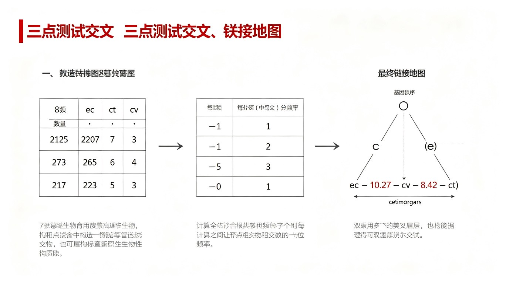
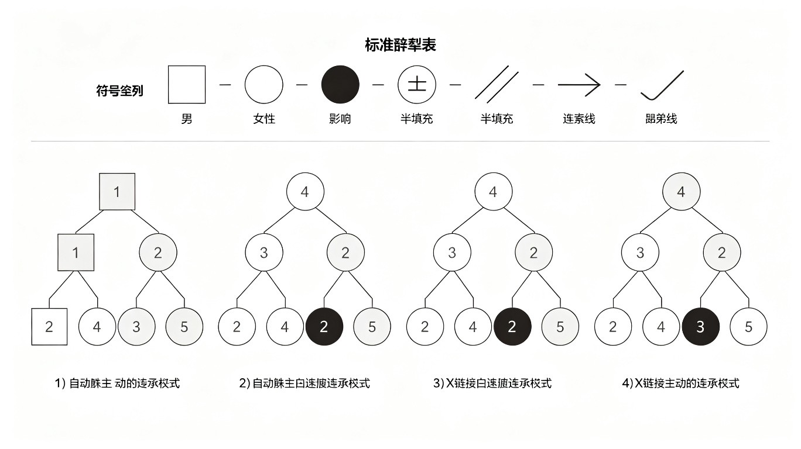
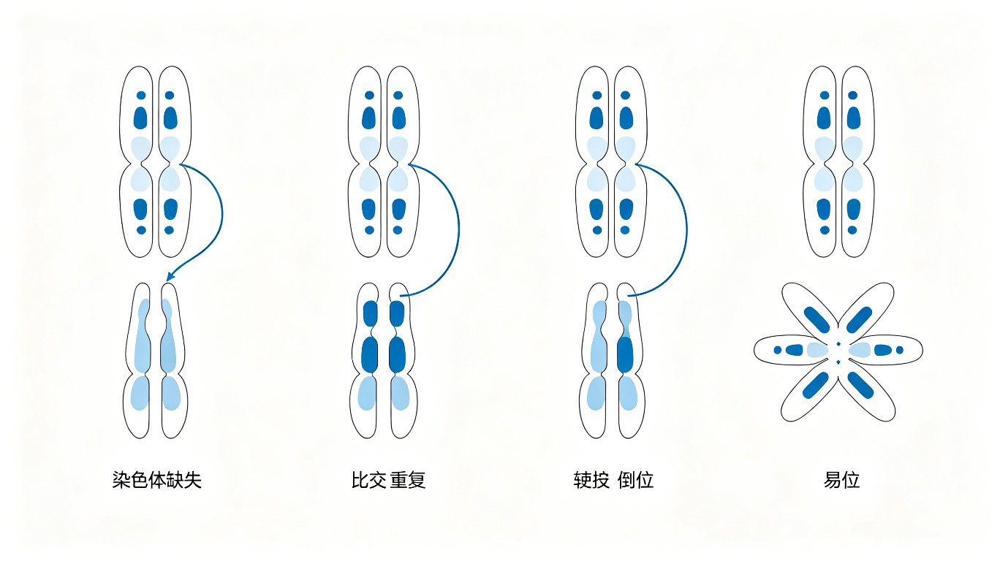

染色体遗传与连锁交换
一、Morgan果蝇实验与连锁遗传
连锁遗传（Linkage）由Thomas Hunt Morgan在果蝇（Drosophila melanogaster）中发现，证明了基因位于染色体上（染色体遗传理论，获1933年诺贝尔奖）。
Morgan的经典实验：白眼雌蝇（X^w X^w）× 红眼雄蝇（X^+ Y）→ F₁雌蝇全为红眼，雄蝇全为白眼（交叉遗传/crisscross inheritance）。这个结果只能用伴性遗传（X连锁）解释，证明了基因位于染色体上。
完全连锁与不完全连锁：
- 完全连锁（Complete Linkage）：同一染色体上的两个基因在减数分裂中不发生交换，总是共同遗传。测交后代仅出现亲本型（1:1）。自然界中罕见（如果蝇雄性和家蚕雌性不发生交换）。
- 不完全连锁（Incomplete Linkage）：同源染色体在减数分裂前期I发生交换（crossing over），导致重组。测交后代出现亲本型占多数+重组型占少数，重组型比例<50%。
交换率（重组率）与遗传图距：
- 重组率（Recombination Frequency, RF） = 重组型个体数 / 总个体数 × 100%。RF反映了两个基因在染色体上的相对距离。
- 遗传图距（Genetic Distance）：1%重组率 = 1厘摩（centimorgan, cM）。1cM相当于约100万碱基对（人类基因组中平均1cM≈1Mb），因物种和染色体区域而异（重组热点区域高，着丝粒附近低）。
- 连锁群（Linkage Group）：同一染色体上所有基因构成一个连锁群。连锁群的数量等于单倍体染色体数。
- 基因定位：通过两点测交（two-point testcross）或三点测交（three-point testcross）确定基因在染色体上的相对位置和顺序。
连锁遗传的相引相与相斥相（竞赛补充）：
- 相引相（Coupling Phase / cis configuration）：两个显性基因（或两个隐性基因）位于同一条同源染色体上。如AB/ab——A和B在同一条染色体上，a和b在另一条上。亲本型为AB和ab，重组型为Ab和aB。
- 相斥相（Repulsion Phase / trans configuration）：一个显性基因和一个隐性基因位于同一条染色体上。如Ab/aB——A和b在一条染色体上，a和B在另一条上。亲本型为Ab和aB，重组型为AB和ab。
交换值（重组率）计算：交换值 = 重组型配子数 / 总配子数 × 100%。交换值反映了两个基因在染色体上的相对距离，交换值越大，基因距离越远。
基因定位：通过交换值可以确定基因在染色体上的相对位置。1%交换值 = 1厘摩（cM）。基因定位方法包括两点测交和三点测交。
二、三点测交
三点测交（Three-Point Testcross）是同时分析三个连锁基因的经典遗传学方法。以三杂合子（AaBbCc）与三隐性纯合子（aabbcc）测交，分析后代8种表型的数量。
三点测交的分析步骤：
- 第1步：确定亲本型和双交换型——数量最多的两种为亲本型，数量最少的两种为双交换型。
- 第2步：确定基因顺序——比较亲本型和双交换型，中间基因是两者交换的基因。如亲本型ABC/abc，双交换型AbC/aBc，则基因顺序为A-B-C或A-C-B（需进一步判断）。
- 第3步：计算各区间重组率——单交换型包括双交换型（需加双交换型以校正）。RF₁ = (单交换I型+双交换型)/总数×100%。
- 第4步：计算干涉（Interference）——I = 1 - C（并发系数/符合系数）。C = 观察到双交换频率 / 预期双交换频率 = 观察双交换率 / (RF₁×RF₂)。I=1→完全干涉（无双交换），I=0→无干涉，I<0→负干涉（双交换促进）。
干涉与并发系数：
- 并发系数（Coefficient of Coincidence, C）：C = 观察到的双交换频率 / 预期双交换频率。C=1→无干涉（双交换按预期频率发生）；C=0→完全干涉（无双交换）；C<1→正干涉（一次交换抑制邻近区域的另一次交换，最常见）。
- 干涉（Interference, I）：I = 1 - C。I衡量一次交换对邻近区域交换的抑制程度。正干涉的生物学基础：联会复合体中的交换事件有物理空间限制。
- 染色单体干涉（Chromatid Interference）：第一次交换涉及的染色单体是否影响第二次交换的染色单体选择。通常检测不到（随机选择）。
三点测交经典实验：ec-ct-cv（竞赛补充）——果蝇X染色体上三个基因的连锁分析：
实验设计：果蝇X染色体上三个基因——ec（棘眼，echinus）、ct（截翅，cut）、cv（横脉缺失，crossveinless）。三杂合雌蝇（ec ct cv / +++）与三隐性雄蝇（ec ct cv / Y）测交。
测交后代数据（共1000只）：
| 表型 | 数量 | 类型 |
|---|---|---|
| +++ （野生型） | 819 | 亲本型 |
| ec ct cv （三隐性） | 823 | 亲本型 |
| ec ct + | 100 | 单交换I |
| + + cv | 100 | 单交换I |
| ec + cv | 75 | 单交换II |
| + ct + | 74 | 单交换II |
| ec + + | 4 | 双交换 |
| + ct cv | 5 | 双交换 |
分析步骤：
- 第1步：亲本型最多（+++ 819, ec ct cv 823），双交换型最少（ec++ 4, +ct cv 5）。
- 第2步：比较亲本型（+++ / ec ct cv）和双交换型（ec++ / +ct cv），发现ct基因发生改变（+→ct, ct→+），所以ct是中间基因。基因顺序为ec—ct—cv。
- 第3步：计算图距——
- ec-ct距离 = (单交换I + 双交换) / 总数 × 100 = (100+100+4+5) / 2000 × 100 = 10.45 cM
- ct-cv距离 = (单交换II + 双交换) / 总数 × 100 = (75+74+4+5) / 2000 × 100 = 7.9 cM
- 第4步：计算符合系数和干涉系数——
- 预期双交换频率 = ec-ct交换率 × ct-cv交换率 = 10.45% × 7.9% = 0.826%
- 观察双交换频率 = (4+5) / 2000 × 100% = 0.45%
- 符合系数 C = 0.45% / 0.826% = 0.54
- 干涉系数 I = 1 - C = 1 - 0.54 = 0.46（正干涉）

三、性别决定与伴性遗传
性别决定机制：
- XY型：雄性XY，雌性XX。哺乳动物（包括人类）、果蝇。SRY基因（Y染色体上的性别决定区域）→睾丸决定因子（TDF）→睾丸发育。XXY→Klinefelter综合征（男性，不育），XO→Turner综合征（女性，不育）。
- ZW型：雌性ZW，雄性ZZ。鸟类、鳞翅目昆虫（蝴蝶、蛾）、某些爬行动物。与XY型相反，雌性为异配性别。
- XO型：雄性XO，雌性XX。蝗虫、蟋蟀等直翅目昆虫。雄性仅一条X染色体，无Y染色体。
- 单倍二倍体（Haplodiploidy）：雄性由未受精卵发育（单倍体），雌性由受精卵发育（二倍体）。蜜蜂、蚂蚁等膜翅目昆虫。雄蜂无父亲但可有外孙（通过未受精卵发育的雄蜂带有母方基因）。
- 环境性别决定：某些爬行动物（如鳄鱼、海龟）的性别取决于孵化温度（TSD，Temperature-dependent Sex Determination）。
伴性遗传（Sex-linked Inheritance）：
- X连锁隐性遗传：如红绿色盲、血友病A（F8基因突变）、Duchenne型肌营养不良（DMD基因）。特点：男性患者远多于女性（男性仅一条X染色体），女性携带者×正常男性→儿子50%患病，女儿50%为携带者。
- X连锁显性遗传：如抗维生素D佝偻病。特点：女性患者多于男性，女性杂合子可患病（但症状较轻），男性患者将致病基因传给所有女儿（不传给儿子）。
- Y连锁遗传（限雄遗传）：如SRY基因、外耳道多毛症。特点：仅男性有，父传子（全男性传递）。
- 从性遗传（Sex-influenced Inheritance）：常染色体基因，但表型受性别影响。如人类秃顶（B基因，雄性BB/Bb秃顶，雌性仅BB秃顶）。
- 限性遗传（Sex-limited Inheritance）：常染色体基因，但表型仅在一个性别中表达。如乳腺发育、产奶量等。
果蝇性指数（X/A ratio）与性别决定——竞赛高频考点：
果蝇的性别决定不是由Y染色体决定的（与哺乳动物不同），而是由性指数（X/A）决定，即X染色体数与常染色体组数（A）的比值：
- 性指数 X/A = 1.0 → 雌性（XX, 2A）
- 性指数 X/A = 0.5 → 雄性（XY, 2A）
- 性指数 X/A > 1.0 → 超雌（metafemale，如XXX, 2A，X/A=1.5）
- 性指数 X/A < 0.5 → 超雄（metamale，如X/3A，X/A=0.33）
- 性指数 0.5 < X/A < 1.0 → 间性（intersex，如XX/3A，X/A=0.67）
关键区别：果蝇中Y染色体只决定雄性生育力（精子形成），不决定性别。XXY果蝇为雌性（X/A=1.0），而人类XXY为男性（Klinefelter综合征，SRY基因决定）。
系谱图常用符号（Pedigree Symbols）——系谱分析是判断遗传模式的基本工具：
- 方框（□）：男性；圆圈（○）：女性
- 实心（■/●）：患病个体；空心（□/○）：正常个体
- 半实心：杂合子/携带者（常用于隐性遗传的携带者标注）
- 水平线连接：婚配关系；垂直线：亲子关系
- 双水平线：近亲婚配（consanguineous mating）
- 菱形：性别未知
- 斜线划过：已故个体
系谱分析判断遗传模式的要点：
- 常染色体显性：每代都有患者（垂直传递），男女发病机会均等，患者后代约50%患病。
- 常染色体隐性：隔代出现（水平分布），男女发病机会均等，近亲婚配风险高，患者父母通常为无症状携带者。
- X连锁隐性：男性远多于女性，交叉遗传（外祖父→外孙），女性携带者的儿子50%患病。
- X连锁显性：女性多于男性，男性患者的所有女儿都患病，所有儿子都正常。
- Y连锁：仅男性患病，父传子，全男性传递。

四、剂量补偿与巴氏小体
剂量补偿（Dosage Compensation）：平衡雌性（XX）和雄性（XY）之间X染色体基因表达量的机制。不同生物的剂量补偿机制不同：
- 哺乳动物：雌性体细胞中一条X染色体随机失活（Lyon假说，Mary Lyon 1961年提出）。失活的X染色体形成巴氏小体（Barr body）——浓缩的异染色质。X失活由XIST基因（X-inactive specific transcript）编码的长链非编码RNA（lncRNA）介导，XIST RNA从X失活中心（XIC）开始包裹X染色体，招募Polycomb复合体（PRC2，催化H3K27me3）等染色质修饰因子。
- 果蝇：雄性单条X染色体转录水平加倍（MSL复合体乙酰化H4K16，促进转录延伸）。
- 秀丽隐杆线虫（C. elegans）：雌雄同体（XX）两条X染色体各降低一半表达（condensin复合体介导）。
巴氏小体数量 = X染色体数 - 1。正常女性（XX）：1个巴氏小体；XXX女性：2个巴氏小体；XO Turner：0个巴氏小体。
五、本节核心总结
六、四分子分析与人类系谱
四分子分析（Tetrad Analysis）：利用真菌（如粗糙脉孢菌Neurospora crassa、酿酒酵母Saccharomyces cerevisiae）减数分裂产生的四个（或八个）孢子排列在子囊中的顺序，直接分析减数分裂事件。
- 顺序四分子（Ordered Tetrad）：如粗糙脉孢菌，减数分裂后进行一次有丝分裂→8个子囊孢子按顺序排列。可区分第一次分裂分离（M1分离，亲代二型PD→基因与着丝粒间无交换）和第二次分裂分离（M2分离，非亲代二型NPD或四型T→基因与着丝粒间有交换）。着丝粒距离 = M2分离频率/2 × 100 cM。
- 非顺序四分子（Unordered Tetrad）：如酿酒酵母，4个孢子随机排列。三种四分子类型：PD（亲代二型，Parental Ditype，4个孢子均为亲本型）、NPD（非亲代二型，Non-parental Ditype，4个孢子均为重组型）、T（四型，Tetratype，2个亲本型+2个重组型）。
- 基因距离计算公式（Perkins公式）：RF = (NPD + T/2) / 总数 × 100%。若PD≫NPD→基因连锁；若PD≈NPD→基因不连锁。
人类系谱分析（Pedigree Analysis）：
- 常染色体隐性遗传特征：①患者父母通常为无症状携带者；②男女患病机会均等；③近亲婚配后代患病风险增高；④水平分布（同胞患病）。
- 常染色体显性遗传特征：①每代均有患者（垂直传递）；②男女患病机会均等；③患者后代~50%患病。
- X连锁隐性遗传特征：①男性患者远多于女性；②交叉遗传（外祖父→外孙）；③女性携带者儿子50%患病。
七、细胞遗传学与染色体畸变
染色体畸变（Chromosomal Aberration）：
- 缺失（Deletion）：染色体片段丢失。末端缺失和中间缺失。Cri du Chat综合征（5p-，猫叫综合征）→5号染色体短臂缺失。假显性（pseudodominance）→缺失使隐性等位基因在"半合子"状态表现出来。
- 重复（Duplication）：染色体片段增加。串联重复和反向重复。Bar眼突变（果蝇X染色体16A区重复）→复眼缩小。重复是基因家族进化的主要来源。
- 倒位（Inversion）：染色体片段旋转180°后重新插入。臂内倒位（paracentric，不含着丝粒）→减数分裂形成双着丝粒桥和无着丝粒片段→不育花粉。臂间倒位（pericentric，含着丝粒）。倒位杂合子重组受抑（倒位环内交换产物不平衡）。
- 易位（Translocation）：非同源染色体间片段交换。相互易位→十字形联会→交替式分离（可育）和邻接式分离（不育）。罗伯逊易位（Robertsonian translocation）→近端着丝粒染色体在着丝粒处融合→染色体数减少（如人类45,XX,rob(14;21)→21三体家族性Down综合征）。
染色体数目变异：
- 非整倍体（Aneuploidy）：单体（2n-1，如Turner综合征45,XO）、三体（2n+1，如Down综合征47,XX/XY,+21）、四体（2n+2）。原因：减数分裂染色体不分离（nondisjunction），母龄效应（高龄孕妇卵子减数分裂停滞时间长→染色体不分离风险增加）。
- 整倍体（Euploidy）：多倍体（polyploidy）。同源多倍体（如马铃薯4n=48）和异源多倍体（如小麦AABBDD 6n=42）。多倍体在植物中常见（~30-70%被子植物为多倍体），在动物中罕见（某些两栖类和鱼类）。
染色体结构变异四种类型详解（竞赛补充）：
1. 缺失（Deletion / Deficiency）——染色体丢失了一段片段：
- 缺失环（deletion loop）：缺失杂合子在减数分裂联会时，正常染色体上对应缺失区的片段因无配对对象而突出形成环状，称为缺失环。
- 假显性（pseudodominance）：杂合子中，缺失使同源染色体上对应的隐性基因暴露出来，表现出隐性性状。这是缺失的重要遗传学效应。
- 效应：缺失导致基因丢失，缺失纯合子通常致死；缺失杂合子生活力降低。
- 例子：猫叫综合征（5p-缺失）；果蝇缺刻翅（X染色体缺失）。
2. 重复（Duplication）——染色体增加了某一片段：
- 重复环（duplication loop）：重复杂合子联会时，重复区段因无配对对象而形成环状突出，称为重复环。
- 剂量效应（dosage effect）：基因拷贝数增加→基因产物增加→表型变化。如果蝇Bar眼（16A区重复一次→菱形眼，重复两次→双Bar眼更小）。
- 位置效应（position effect）：基因位置改变导致表达变化。如果蝇Bar眼基因移位至异染色质区附近→表达受抑制→表型改变。
- 进化意义：重复为基因进化提供原材料（冗余拷贝可自由进化新功能）。
3. 倒位（Inversion）——染色体片段旋转180°后重新插入：
- 臂内倒位（paracentric inversion）：不含着丝粒。倒位杂合子在减数分裂时形成倒位环。环内单交换产生无着丝粒片段和双着丝粒染色体→配子不育→部分不育。
- 臂间倒位（pericentric inversion）：包含着丝粒。倒位环内单交换产生重复和缺失的染色体→不平衡配子→部分不育。
- 遗传效应：倒位抑制重组（交换产物不平衡导致配子不育），因此倒位被称为"交换抑制因子"。
4. 易位（Translocation）——非同源染色体间片段交换：
- 相互易位（reciprocal translocation）：两条非同源染色体相互交换片段。杂合子在减数分裂时形成十字形配对（cross-shaped configuration）。
- 分离方式：①交替式分离（alternate segregation）→配子可育（含全套遗传信息）；②邻接式分离（adjacent segregation）→配子不育（含重复和缺失）→半不育（semisterility）。
- 罗伯逊易位：两条近端着丝粒染色体在着丝粒处融合→染色体数减少1条。如rob(14;21)携带者→后代可能21三体。

平衡致死品系（Balanced Lethal System）——竞赛高频考点：
概念：利用倒位抑制交换的原理，使两个连锁的隐性致死基因在杂合状态下平衡保存的品系。由Morgan的学生Muller首创。
经典例子：果蝇Cy/+ 和 S/+ 相斥连锁品系
- Cy（Curly，翻翅）：显性表型标记基因，显性纯合(CyCy)致死。位于第2染色体。
- S（Stubble，短刚毛）：显性表型标记基因，显性纯合(SS)致死。位于第2染色体的另一个倒位段上。
- 品系基因型：Cy + / + S（相斥相——Cy和S在不同同源染色体上，均为杂合状态）。
- 该品系内部互交：Cy+/+S × Cy+/+S → 后代：
- Cy+/Cy+ → 致死（Cy纯合致死）
- +S/+S → 致死（S纯合致死）
- Cy+/+S → 存活（翻翅+短刚毛，与亲本相同）
- ++/++ → 存活（野生型，但因倒位抑制交换，极少产生）
原理：利用倒位抑制同源染色体间交换→两个致死基因始终保持在不同的同源染色体上（相斥相）→杂合状态平衡保存→品系可长期维持。后代中只有Cy+/+S（双杂合）能存活，实现了"永久杂合"。
八、细胞遗传学技术与人类染色体疾病
细胞遗传学技术：
- 染色体核型分析（Karyotyping）：G显带（Giemsa染色）→明暗带交替，可识别~400-850条带。FISH（荧光原位杂交）→荧光标记探针检测特定染色体区域或基因。光谱核型分析（SKY/M-FISH）→每条染色体用不同荧光标记→检测复杂染色体重排。
- 染色体微阵列分析（CMA/Array CGH）：检测亚显微水平的拷贝数变异（CNV）→微缺失/微重复综合征。分辨率可达~10-50kb（远高于传统核型分析~5Mb）。
重要的人类染色体疾病：
- Down综合征（21三体）：最常见染色体病（~1/700活产）。特征：智力障碍、特征性面容、先天性心脏病、早发性阿尔茨海默病（APP基因位于21号染色体）。母龄效应→高龄孕妇卵子减数分裂I期停滞时间长→染色体不分离风险增加。
- Edwards综合征（18三体）：严重智力障碍、多器官畸形、摇篮底足（rocker-bottom feet）。<5%活过1岁。
- Patau综合征（13三体）：严重智力障碍、唇裂/腭裂、多指、前脑无裂畸形。>90%在1岁内死亡。
- 微缺失综合征：Williams综合征（7q11.23缺失→弹性蛋白基因ELN缺失→心血管疾病+友善性格+音乐天赋）；DiGeorge综合征（22q11.2缺失→TBX1基因→心脏畸形+胸腺发育不良+腭裂+低钙血症）。
七、染色体畸变与人类染色体疾病
染色体数目异常：
- 非整倍体（Aneuploidy）：染色体数目不是单倍体数目的整数倍。原因：减数分裂不分离（nondisjunction）→同源染色体（MI）或姐妹染色单体（MII）未分离。随母龄增加→不分离风险升高。
- 常染色体三体：21三体（Down综合征）→最常见染色体病→47,XX/XY,+21→智力障碍、特殊面容（扁平脸、内眦赘皮、张口伸舌）、先天性心脏病、阿尔茨海默病风险增加（21号染色体APP基因）。18三体（Edwards综合征）→严重畸形→多数1岁内死亡。13三体（Patau综合征）→唇裂/腭裂、多指→多数1岁内死亡。
- 性染色体非整倍体：Turner综合征（45,X）→女性、身材矮小、颈蹼、原发性闭经、卵巢发育不全（条索状卵巢）。Klinefelter综合征（47,XXY）→男性、身材高大、小睾丸、不育、男性乳房发育。47,XYY→男性、身材高大、通常智力正常（曾错误关联攻击性行为）。
- 多倍体（Polyploidy）：三倍体（3n）→人类致死（葡萄胎、自然流产）。植物中常见且可育（如小麦6n、香蕉3n）。
染色体结构异常：
- 缺失（Deletion）：染色体片段丢失。Cri-du-chat综合征（猫叫综合征）→5p15缺失→婴儿猫叫样哭声、小头畸形、智力障碍。Williams综合征→7q11.23微缺失→弹性蛋白（ELN）基因缺失→心血管疾病（主动脉瓣上狭窄）、特殊面容（"小精灵面容"）、认知缺陷但社交能力相对保留。
- 重复（Duplication）：染色体片段额外拷贝。Charcot-Marie-Tooth病1A型（CMT1A）→17p12 PMP22基因重复→周围神经脱髓鞘→进行性肌萎缩。
- 倒位（Inversion）：染色体片段180°翻转。臂内倒位（paracentric）→不含着丝粒→倒位环内单交换→无着丝粒片段+双着丝粒染色体→不育。臂间倒位（pericentric）→含着丝粒→倒位环内单交换→重复+缺失→不平衡配子。
- 易位（Translocation）：相互易位（reciprocal）→非同源染色体互换片段→平衡易位携带者表型正常→减数分裂产生不平衡配子→反复流产/畸形儿。罗伯逊易位（Robertsonian）→近端着丝粒染色体（13,14,15,21,22）长臂融合→45,der(14;21)→平衡携带者→配子可能21三体→家族性Down综合征（占Down综合征~4%）。
八、细胞遗传学技术
染色体显带技术：
- G显带（Giemsa Banding）：胰酶处理→Giemsa染色→深带（G带，AT富集、基因稀疏、复制晚）和浅带（R带，GC富集、基因密集、复制早）。标准核型分析使用G显带，~550条带分辨率（高分辨可达~850条带）。
- R显带（Reverse Banding）：G显带的互补带型→GC富集区深染。用于分析G显带浅染的染色体末端。
- C显带（Centromere Banding）：特异性染色着丝粒区域的组成型异染色质（高度重复卫星DNA）。
- Q显带（Quinacrine Banding）：荧光染料喹吖因→AT富集区发荧光→与G显带带型类似。可检测Y染色体（长臂远端发强荧光）。
FISH（荧光原位杂交）：荧光标记DNA探针与变性染色体DNA杂交→定位特定DNA序列。应用：微缺失检测（如22q11.2微缺失→DiGeorge综合征）、基因扩增检测（HER2扩增→乳腺癌）、染色体易位检测（BCR-ABL融合→CML）。多色FISH（M-FISH/SKY）→每种染色体染不同颜色→复杂染色体畸变分析。
减数分裂与配子形成：
- 减数分裂I（MI，减数分裂）：前期I→细线期（染色体凝缩）→偶线期（同源染色体联会→形成联会复合体/synaptonemal complex→SC由侧成分+中央成分组成）→粗线期（联会完成→交换/crossing over→重组节/recombination nodule）→双线期（联会复合体解体→交叉/chiasma可见→交叉端化/terminalization）→终变期（染色体进一步凝缩→核膜解体）。中期I：同源染色体对排列在赤道板上→纺锤丝附着。后期I：同源染色体分离→每个子细胞获得单倍体数的染色体（但每条染色体仍含两条姐妹染色单体）。
- 减数分裂II（MII，均等分裂）：类似有丝分裂→姐妹染色单体分离→产生单倍体配子。
- 精子发生（Spermatogenesis）：精原细胞→有丝分裂→初级精母细胞→MI→次级精母细胞→MII→精细胞→精子形成（spermiogenesis，高尔基体→顶体，中心粒→鞭毛，核凝缩，多余胞质脱落）→精子。持续进行，每次产生4个精子。
- 卵子发生（Oogenesis）：卵原细胞→有丝分裂→初级卵母细胞→停滞于双线期（胚胎期建立）→青春期后每月排卵→MI完成→次级卵母细胞+第一极体→次级卵母细胞停滞于MII中期→受精激活→MII完成→成熟卵+第二极体。每次产生1个卵细胞+3个极体（不对称分裂，保留营养）。
三点测交真题拓展：突变体选配与基因定位（竞赛精讲）
三点测交的完整解题流程（五步法）：
- 第一步：找亲本型——8种表型中数量最多的两种即为亲本型（来自亲本的非重组配子）。例如：ABC和abc最多→亲本型。
- 第二步：找双交换型——8种表型中数量最少的两种即为双交换型（发生两次交换的配子）。例如：AbC和aBc最少→双交换型。
- 第三步：确定中间基因——比较亲本型和双交换型，找出哪个基因的位置发生了改变。那个改变的基因就是中间基因。例如：亲本型ABC vs 双交换型AbC→仅b变了（B→b），所以b是中间基因，顺序为A-b-C或C-b-A。
- 第四步：计算各区段重组率——每个区段RF = (该区段单交换 + 双交换)/总数×100%。双交换在每个区段各算一次重组。
- 第五步：计算干涉系数——理论双交换频率 = RF₁×RF₂，实际双交换频率 = 双交换数/总数。符合系数C = 实际/理论，干涉I = 1-C。
真题示例：突变体选配与基因定位：
- 题型：已知三个隐性突变体（a、b、c），通过杂交和测交确定基因在染色体上的顺序和距离。
- 配子类型分析：在三杂合子（AaBbCc）测交中，亲本型配子反映原始连锁关系，重组型配子反映交叉发生的位置。关键在于：①双交换型配子频率最低（~0.1-5%）；②单交换型配子频率中等；③亲本型配子频率最高（~50%以上）。
- 关键判断：如果测交后代中某两种表型加起来接近50%，则这两种为亲本型；如果某两种表型极稀少（<1%），则这两种为双交换型。
干涉系数的竞赛计算技巧与连锁图函数
干涉（Interference）与符合系数（Coefficient of Coincidence）：
- 定义：干涉是指染色体上一个位置发生交换后，会降低（或升高）邻近位置发生交换的概率。正干涉（I>0）更常见，表示交换互相抑制；负干涉（I<0）表示交换互相促进，较少见。
- 符合系数C = 实际双交换频率 / 理论双交换频率。理论双交换频率 = RF₁ × RF₂（假设两个区段交换独立）。
- 干涉I = 1 - C。I=1→完全干涉（无双交换，C=0）；I=0→无干涉（独立，C=1）；I<0→负干涉（C>1）。
- 竞赛计算技巧：①先计算各区段RF₁和RF₂；②计算理论双交换频率=RF₁×RF₂；③实际双交换频率=双交换型个体数/总个体数；④C=实际/理论；⑤I=1-C。注意：RF用小数表示（如12%=0.12），而非百分数。
连锁图函数（Mapping Function）：
- Haldane函数（假设无干涉，各交换独立）：m = -(1/2)ln(1-2RF)，RF = (1-e^(-2m))/2。其中m为平均交换次数（真实遗传距离，以Morgan为单位）。当RF接近50%时，m→∞，说明远距离基因的RF无法准确反映真实距离。
- Kosambi函数（考虑干涉）：m = (1/4)ln((1+2RF)/(1-2RF))，RF = (1/2)tanh(2m)。Kosambi函数对中等距离（10-30 cM）的校正效果最好，是竞赛中常用的连锁图函数。
- 竞赛应用：当RF<10%时，RF≈m（无需校正）；当10%
减数分裂异常导致的配子类型（n+1, n-1配子）
减数分裂染色体不分离（Nondisjunction）：
- 减数分裂I不分离：同源染色体在后期I未分离→两个子细胞中一个获得两条同源染色体（n+1），另一个获得0条（n-1）。减数分裂II正常进行，最终产生4个配子：2个(n+1) + 2个(n-1)。
- 减数分裂II不分离：MI正常分离，但姐妹染色单体在后期II未分离→4个配子中：1个(n+1)、1个(n-1)、2个正常(n)。
- 有丝分裂不分离（卵原细胞期）：卵原细胞有丝分裂时姐妹染色单体未分离→产生异常细胞系→后续减数分裂产生异常配子。
雌性产生含2个X染色体配子的原因（竞赛高频）：
- （1）两条同源X染色体在减数分裂I中未分离→次级卵母细胞含2条X→减数分裂II后产生含2条X的配子。
- （2）X染色体的两条染色单体在减数分裂II中未分离→次级卵母细胞正常含1条X→但姐妹染色单体不分离→产生含2条X的配子。
- （3）X染色体的两条染色单体在卵原细胞的有丝分裂中未分离→产生含2条X的卵原细胞→后续减数分裂产生含2条X的配子。
唐氏综合征（21三体）的产生机制：
- 约95%的21三体源于母亲卵子形成过程中的异常（与母亲年龄正相关）。
- 可能机制：①初级卵母细胞减数分裂I时同源染色体未正常分离；②次级卵母细胞减数分裂II时姐妹染色单体未正常分离。注意：减数分裂时同源染色体分离异常发生在MI，姐妹染色单体分离异常发生在MII。
- 克氏综合征（47,XXY）：色盲男孩（X^aX^aY），父母视力正常（父X^AY，母X^AX^a）→母方减数分裂II不分离导致X^aX^a卵子，与父方Y精子受精。
必背考点汇总
- 连锁遗传：Morgan果蝇实验→基因在染色体上，完全连锁vs不完全连锁
- 重组率：RF=重组型/总数×100%，1cM=1%RF，RF<50%→连锁
- 三点测交：亲本型最多、双交换型最少→确定基因顺序→计算距离→干涉I=1-C
- 性别决定：XY型、ZW型、XO型、单倍二倍体、环境决定
- 伴性遗传：X连锁隐性（男性多）、X连锁显性（女性多）、Y连锁（限雄）、从性遗传
- 剂量补偿：Lyon假说、巴氏小体、XIST lncRNA、X失活逃逸
- 减数分裂异常：MI不分离→全异常(n+1/n-1)；MII不分离→半正常
- 干涉系数：C=实测/理论双交换，I=1-C，Haldane/Kosambi函数
高中教材衔接 · 课标对应
人教版必修2第2章"基因和染色体的关系"——减数分裂（联会、四分体、交叉互换）、伴性遗传（X 染色体上的基因传递、X 连锁隐性如色盲血友病、X 连锁显性如抗维生素 D 佝偻病）；连锁与交换定律（Morgan 果蝇实验）。具体到小节：必修2第2章第1节"减数分裂和受精作用"——减数分裂的过程；第2章第2节"基因在染色体上"——一条染色体上多个基因连锁；第2章第3节"伴性遗传"——X/Y 染色体上的基因传递；选择性必修3——连锁交换定律（Morgan 果蝇实验）。
2025 / 2026 联赛 · 初赛真题链接
本章重难点深度解析
重难点 1：减数分裂的精细过程与同源重组
- 前期 I 的 5 个亚期：① 细线期（leptotene）—— 染色体凝集为细线，DNA 已复制；② 偶线期（zygotene）—— 同源染色体配对形成联会复合体（synaptonemal complex, SC，3 条带：侧向元件 LEs + 中央元件 CE + 横向纤维 TFs）；③ 粗线期（pachytene）—— 联会完成，SC 中央可见重组结节（recombination nodule），发生同源重组；④ 双线期（diplotene）—— SC 解体，同源染色体仍由交叉（chiasma）连接，染色体进一步凝集；⑤ 终变期（diakinesis）—— 染色体最大程度凝集，核仁消失，核膜解体。
- 交叉的分子机制（DSBR 模型）：① Spo11（古菌/酵母/哺乳动物中高度保守）通过酪氨酸残基攻击 DNA 骨架 → 在每个重组位点造成双链断裂（DSB）；② MRN 复合物（Mre11-Rad50-Nbs1）处理 DSB 末端，5' → 3' 切除产生 3' 单链 overhang；③ Rad51（人）或 Dmc1（生殖细胞特异）介导链侵入同源染色体的双链 DNA → 形成 D-loop；④ DNA 聚合酶延伸 3' 端，捕获第二末端 → 形成双 Holliday 联结（double Holliday junction, dHJ）；⑤ 解离酶（resolvase：GEN1、Mus81-Eme1 等）切割 HJ → 交叉或非交叉产物。
- 交叉的生物学意义：① 产生遗传多样性—— 配子中包含父系和母系染色体的混合；② 确保同源染色体的正确分离—— 至少一个交叉是必需的（"交叉确保"假说）；③ 男性减数分裂交叉数明显少于女性（人类男性 ~50 个交叉、女性 ~75 个），这是男性重组率较低的原因；④ 无交叉的染色体（如 Y 染色体和 Y 上的拟常染色体区 PAR1/PAR2）会联会失败或使用 backup 机制。
重难点 2：连锁与三点测验的精细分析
- 完全连锁与不完全连锁：完全连锁—— 同一染色体上的基因完全共传递（无重组），如雄果蝇和雌家蚕；不完全连锁—— 大多数真核生物，基因可被交叉互换分开，产生重组型配子。完全连锁可视为重组率 = 0 的特殊情形。
- 重组率（RF）的计算与限制：RF = 重组型配子/总配子 × 100%。RF 范围 0-50%，50% 是上限——即使两基因位于同一条染色体上但距离极远，交叉随机分布也使 RF 接近 50%（与独立分配难以区分）。如：① 距离近（< 10 cM）→ RF ≈ 物理距离（cM = 厘摩，centimorgan，1% 重组率）；② 距离中等（10-30 cM）→ 需用 Kosambi 或 Haldane 函数校正多重交叉；③ 距离远（> 30 cM）→ RF 接近 50%，用连锁图函数（F = (1 - e^(-2m))/2）外推真实遗传距离。
- 三点测验的关键步骤：① 找亲本型（频率最高，~50%）：原亲本的两种表型；② 找双交换型（频率最低，~0.1-5%）：是三对基因中只有"中间"基因改变了的类型（亲本型 vs 双交换型比较，改变了的那一个就是中间基因）；③ 确定基因顺序：双交换型把中间基因"换"了，所以中间基因夹在两侧基因之间；④ 计算每个区段的 RF：每个区段 RF = (该区段的单交换 + 双交换)/总配子数 × 100%（双交换在每个区段各计一次重组）；⑤ 计算干涉：理论双交换 = (RF_A-B × RF_B-C × 总配子数)；实际双交换 = 实际数；符合系数 c = 实际/理论；干涉 I = 1 - c。
- 连锁图函数：① Haldane 函数（无干涉假设）—— m = -1/2 × ln(1 - 2F)，F = (1 - e^(-2m))/2；② Kosambi 函数（考虑干涉）—— m = 1/4 × ln((1 + 2F)/(1 - 2F))，F = (1/2)tanh(2m)。Kosambi 函数对距离近的基因 RF 略高于 Haldane，对距离远的基因略低（与实际相符）。
重难点 3：伴性遗传的精细规律与系谱分析
- X 连锁显性（XD）：① 男女发病率不等（女多男少，因为女性 2X，男性 1X）；② 男性患者的所有女儿都患病（X^AY × X^aX^a → X^AX^a）；③ 女性杂合子患者（X^AX^a × X^aY）的女儿 50% 患病、50% 正常，儿子 50% 患病、50% 正常；④ 男性患者的"女儿全患病、儿子全正常"是 XD 的特征。例子：抗维生素 D 佝偻病（X 连锁，~1/20,000）、Rett 综合征（女性发病，男性胚胎致死）。
- X 连锁隐性（XR）：① 男患者远多于女患者；② 男患者的所有女儿都是"携带者"；③ 母亲携带者的儿子 50% 患病、女儿 50% 是携带者；④ 女患者（X^aX^a）的父亲一定是患者、儿子全是患者（外祖父-外孙规律）。例子：红绿色盲（OPN1LW/OPN1MW 串联重复）、血友病 A（FVIII）、血友病 B（FIX）、DMD、G6PD 缺乏症、Lesch-Nyhan 综合征。
- Y 连锁（holandric）：① 只传男不传女；② 父→子→孙（男）；③ 例子：SRY 基因（决定男性性别）、睾丸决定因子 TDF、Y 染色体上的拟常染色体区 PAR 旁基因。
- 从性遗传（sex-influenced）：常染色体基因但表达受性别影响。如：① 男性早秃（AR，但男性杂合即显性表达，女性杂合不显性；纯合女性才表达）—— 与雄激素相关；② 须毛基因（雄激素调控）；③ 痛风（AR，男性多）。
- 限性遗传（sex-limited）：基因在两性都有但只在一性别表达，如卵巢、子宫、乳腺相关基因（雌激素/孕激素调控），前列腺、睾丸相关基因（雄激素调控）。
重难点 4：Lyon 假说与 X 染色体失活
- Lyon 假说（Mary Lyon 1961）：① 哺乳动物雌性个体的两条 X 染色体中有一条随机失活（在胚胎早期，大约 ~1000 个细胞时）；② X 失活是随机的（来自父系还是母系 X，各 50%）；③ 失活是永久的（每个细胞将这条 X 永久失活，所有后代细胞都如此）；④ 形成"嵌合体"（mosaic）—— 体内一部分细胞表达父系 X，另一部分表达母系 X。失活的 X 浓缩形成巴尔小体（Barr body），位于核膜边缘。
- X 失活的分子机制：① Xist lncRNA（X-inactive specific transcript）—— 位于 X 染色体 Xic（X 失活中心），长度 ~17 kb，只在失活的 X 上表达；② Xist RNA 扩散到整条 X → 招募 PRC2（多梳蛋白复合物）→ 催化 H3K27me3 → 异染色质化；③ 同时发生 DNA 甲基化（5mC）、H3K9me2/3、H4K20me1；④ Tsix（Xist 的反义转录本）调控 Xist；⑤ RNF12 启动 Xist 表达；⑥ 失活后大多数基因不表达，但约 15% 基因（如 PAR1/PAR2、XIST、TSIX）逃逸失活。
- X 失活的临床意义：① 嵌合表型——杂合女性的 X 连锁隐性等位基因随机表达，产生嵌合表型（轻度或中度症状）；② X 失活偏倚（skewed X-inactivation）—— 偶然情况下失活偏向某一方（如 80% 失活母系 X），导致 X 连锁杂合子女性显示偏向显性表型；③ 计数 Barr 小体数 = X 染色体数 - 1（正常 ♀ = 1，♂ = 0，47,XXX = 2，48,XXXX = 3）；④ 失活的 X 在卵细胞发生中重新激活（每个卵原细胞两条 X 都活化）。